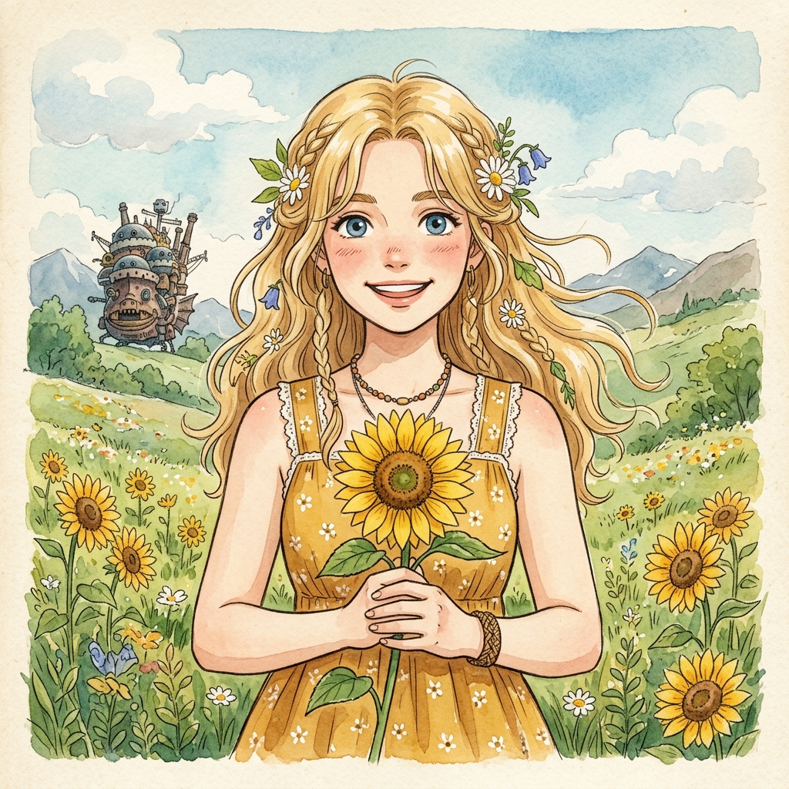
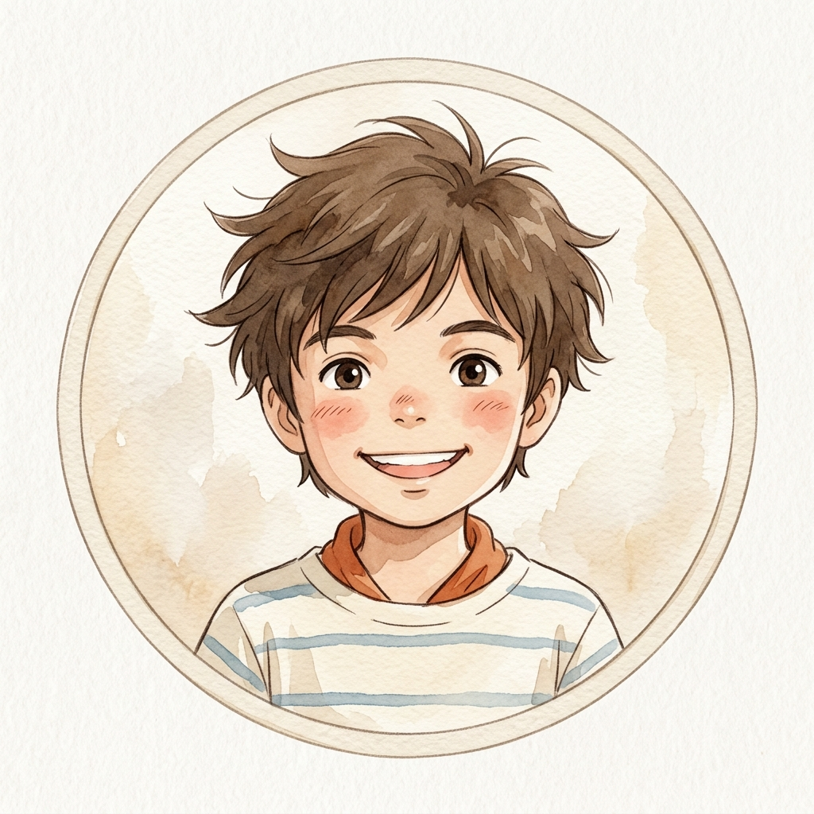
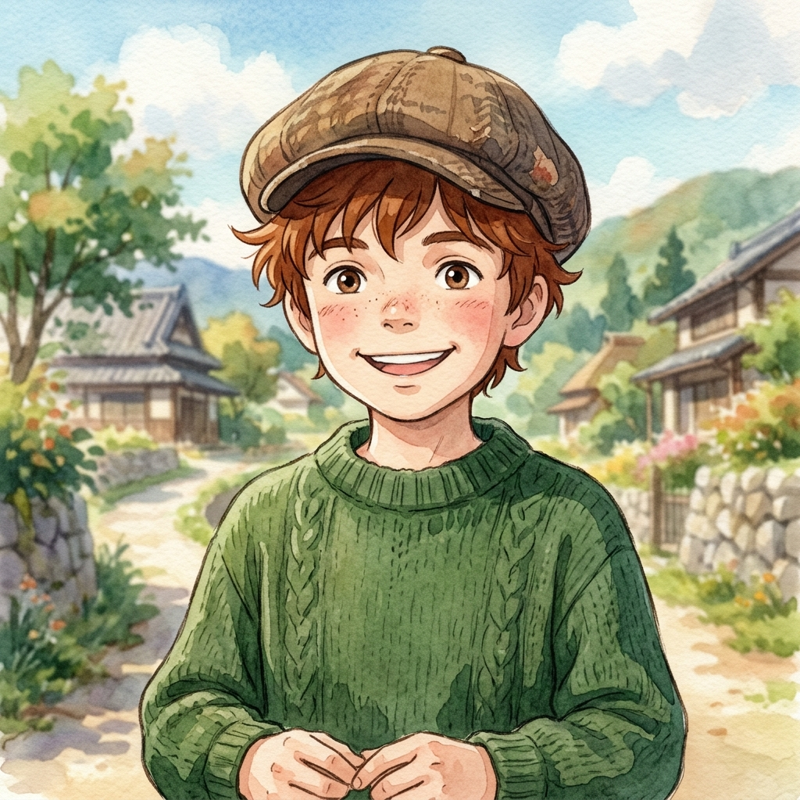

You can use "I am" followed by "a" or "an" to state your job or profession.
Click play to listen or use Rec to practice speaking out loud!



Listen to each description and click the correct occupation for each person!